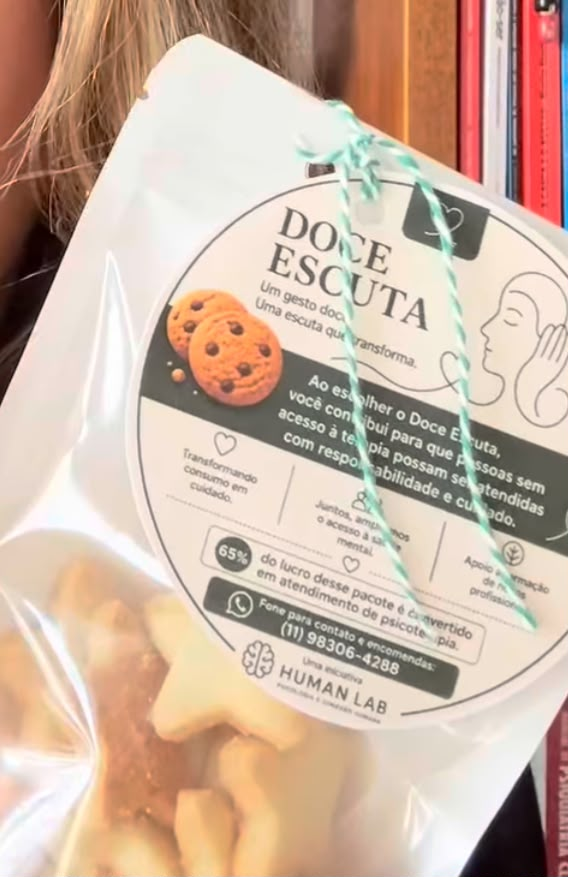
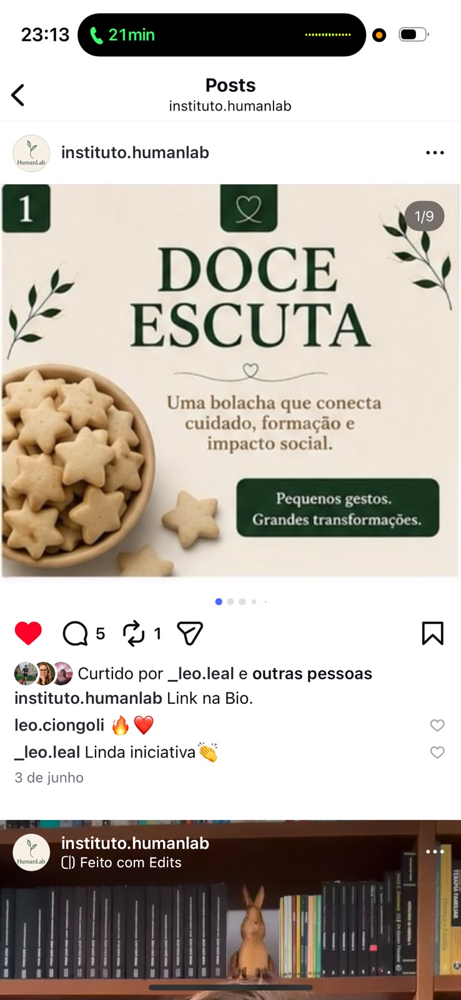

Você consome com propósito
Encomenda um pacote — biscoito artesanal feito com cuidado, em pequenas fornadas, embalado e entregue.
Uma bolacha que conecta cuidado, formação e impacto social.

Ao escolher o Doce Escuta, você contribui para que pessoas sem acesso à terapia possam ser atendidas com responsabilidade e cuidado.
Cada pacote é uma escutinha. Cada compra é parte do orçamento de uma sessão. É comida que vira escuta — e escuta que vira possibilidade.
do lucro de cada pacote é convertido em atendimento de psicoterapia para quem não tem como pagar.
Transformando consumo em cuidadoUma engrenagem simples — biscoitos artesanais que sustentam sessões reais, com profissionais formados.
Encomenda um pacote — biscoito artesanal feito com cuidado, em pequenas fornadas, embalado e entregue.
65% do lucro de cada pacote é separado para custear sessões de psicoterapia destinadas a pessoas sem acesso ao cuidado.
Psicólogos formados pelo Instituto HumanLab atendem essas pessoas, garantindo escuta com a mesma seriedade clínica.

O Doce Escuta nasce de uma pergunta simples: e se um gesto cotidiano — comer um biscoito — pudesse abrir uma porta para alguém ser escutado?
Foi assim que nasceu este projeto social do Instituto HumanLab: biscoitos artesanais cujo lucro sustenta sessões reais de psicoterapia para quem não tem como pagar. O resto da história está no nosso Instagram.
@instituto.humanlabAcesso à saúde mental ainda é privilégio. Doce Escuta é uma das formas, pequena e teimosa, de fazer essa conta começar a fechar.Instituto HumanLab · 2026
Pedidos pelo WhatsApp ou pelo Instagram. Entregamos em São Paulo e enviamos para outras cidades sob combinação.